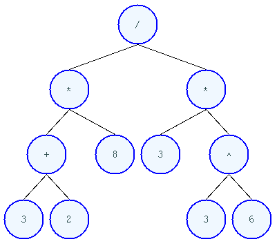

A Realistic Solution to the Education Problem (DRAFT)
Table of Contents
Note to the reader: This draft describes the program Masamune as if it were ready to release (i.e. more complete than it is). Coupled with the sources it provides sufficient information for another to complete the implementation.
1 Executive summary
~MOOCS (massively open online courses and the like) have embraced popular braindamage and doomed themselves. Technically this resolves to Ivy League students pouring their lives into a website. Strategically: integration with the fiat rather than bitcoin. New frontiers have opened, Masamune provides foundations for mission critical programmes of the future. A technically sophisticated education system is trivially implemented on correct foundations.
2 Introduction
In spite of the (pseudo-)intellectual and fiscal attention over the past several years, the education system remains broken. The intuition that computers can automate its more boring processes is certainly correct, but thus far programmes so rooted have succeed only in embarrassing their stakeholders. The traditional educational system has functioned for centuries, spanning war, famine, disease and all other disasters. Ample information exists to have formalized its purpose, an understanding of the decay, problem statement and solution. As of yet, nil. The only variation of note in the ~MOOCs is the scheme employed to teach computer science. The bifurcation is an evolutionary dead end, but in the interests of completeness,
Branch 0
Coursera, EdX and their derivatives instruct using a combination of videos and supplementary materials (~wiki pages). Students watch videos, translate contents into their local computing environments and submit programs to the MOOC via command line. In principle, one can teach anything in this fashion, but no data can be gathered about the learning process. ML is not magic. The combination of a single website's clickstream data and the output of submitted programs is pedagogically uninteresting.
Branch 1
Udacity, Khan, Code Academy and their derivatives have created proprietary online editors with each engineering team supporting a different subset of programming languages and their associated toolchains. This choice, regardless of said engineer's inevitable protests about what is "natural", "intuitive" and "friendly" reduces to the language(s) they're most familiar with. Supporting a language on this architecture requires forever mirroring its tooling and idioms in their custom environment at ~the cost of the original. This doesn't scale. Furthermore, web browsers are a technological dead-end. They lack and will forever lack access to the OS level resources required when writing of programs of non-trivial academic or commercial interest. The student who programs in his free time will quickly discover that what he's being taught isn't the actual practice of programming and that reading documentation is a far more effective strategy.
No ~MOOC has made even a perfunctory attempt at untangling the gordian knot of publishing/grant-writing/salami-science. All have opted to host, vet and assist in the production of all content available on their websites. Adoption of this system would result in a single bureaucracy which hosts and controls the entirety of scientific discourse; a serious regression from the present arrangement.
3 Purpose of the University System
[University training] is the education which gives a man a clear conscious view of his own opinions and judgments, a truth in developing them, an eloquence in expressing them, and a force in urging them. It teaches him to see things as they are, to go right to the point, to disentangle a skein of thought, to detect what is sophistical, and to discard what is irrelevant.
– Cardinal John Henry Newman, The Idea of a University, 1852.
The primary responsibility of the university system is the education of its students. Economic prosperity, technological progress etc. are emergent properties of an education system with the correct priorities.
4 The Decay
Can be completely understood by anyone who wishes to understand it. I'll not waste time butchering summarizing the work of my elders and betters.
- http://www.lambdassociates.org/blog/decline.htm
- http://unqualified-reservations.blogspot.com/2007/07/my-navrozov-moments.html
- http://unqualified-reservations.blogspot.com/2007/08/whats-wrong-with-cs-research.html
- http://trilema.com/2013/a-very-unfair-perspective/
- http://trilema.com/2014/fata-morgana-ii-or-dont-you-just-hate-it-when-you-come-up-with-an-idea-and-a-title-and-then-discover-you-need-an-introduction-which-keeps-swelling-so-eventually-youre-stuck-publishing-it-as-a-sta/
5 Problem Statement
5.1 Political
We know how to build a functional education system: admittance based on intellectual merit alone. That the no silicon valley startup or discussion in the public sphere originates from these coordinates is positive proof that the thinking portion of humanity faces far more serious issues than a broken education system. Do you find yourself marveling at the pinnacles of human achievement that are Apple, Facebook, Twitter and Groupon? Do you find the extant governments capable and conscious? Are you a pig rooting for scraps amongst perls? No? Perhaps then, you favor the sane interpretation of reality: Technological stagnation and systemic incompetence propped up by increasingly irrelevant governments, academic institutions and a largely impotent populace.
The personal computer dated bureaucracy. Nevertheless, graduate students the world over waste their time laboring over the most expressive machine ever created to fit their work to the procrustean bed of the pdf for the convenience of decrepit pencil pushers. The individual who chooses to step outside the system finds himself confronted with an ever-expanding set of inane regulation, an enormous variety of technological choices and immediate threat of financial problems (i.e., which combinations of toys will result in stormtroopers kicking in the door, followed by a lengthy court battle?). If the populace wished to end this insanity: write a program that makes interacting with existing political processes a chore rather than a career. Users (legal residents with a desktop computer) must be able to post issues, solutions, conduct uncensored discussions, monitor budgets and draft legislation. Meatspace committees and the like are recognized as an obsolete formality via cleanly defined interfaces (e.g., within some political grouping, a proxy is hired to appear at the appropriate meetings and sign the papers), ensuring decisions made at the user's convenience are translated into practice. Amazon-review style semi-automated grouping of ~identical comments and a fundamentally extensible architecture would suffice to fend off the zerg. If the will of the community were to be subverted, document the incident and respond accordingly. The actual workings of the system, rather than a politically-correct fantasy, are to be documented. It should be trivial to trace responsibility. If the political process is so broken that orderly resolution of disputes is impossible, move. The map is not the territory. Adjust as needed.
I'm unaware of any serious proposals or implementations of a program approximating the above.1 While it is conceivable such systems serve private interests, humanity's lack of technological sophistication indicates that they do not, or are controlled by the pathologically boring. Occam's razor says: the aged lizard club that calls shots do not fully understand the possibilities offered by the computer and fear those who do. Those who do, in turn, don't care to preserve the establishment. Given this, I see no realistic path for a continuity of the established order to one that is technologically sophisticated. The reification of that reality would require that a formidable collection of intelligent, technically literate and politically astute individuals (i.e., actual leaders of men) choose to sacrifice their youth for the existing order (with the apparat fighting them every step of the way) rather than plying their ample ability in pursuit of personal profits.
It follows that we can expect yet more draconian regulation from bureaucrats, who, upon encountering that which they do not understand, attempt to regulate it out of existence, birthing yet more problems and further alienating thinking persons, who create yet more intricate complexities, eventually encountered by bureaucrats…
USG has traveled down far enough down this path to render itself almost entirely irrelevant.2 How and when the system implodes is up for debate.3
5.2 Technical
There are many educational organizations attempting to leverage computing. None have a clearly articulated destination. A distillation the the ideas floating about yields:
I need the ability to publish a unit of research as an interactive program containing all information used to draw my conclusions. It shall be entirely and trivially modifiable, extensible, and if reproducing the research is possible on this machine, running the program shall be a single click or procedure call away. WYSIWYG tools shall be included and fashioned from the precepts of geometry. Thus, if the supplied graphics routines are inadequate, I can fall back on an 'api' independent of man. Lessons, as a refinement of research, shall offer the same capabilities. Networking (e.g., sharing these programs or crafting interactions between them) shall be trivial. No single authority shall dictate what is an isn't appropriate to publish. This is not to be enforced by social machinery which promises to promote and cherish scientific inquiry, but as a consequence of a comprehensible, expressive design that empowers the individual.
There are a couple programs that, at first glance, appear to be approaching this ideal. Mathematica has graphics, scientific libraries, is trivially embeddable in the web (although the client must be running the Mathematica plug-in to see the content), etc. Unfortunately, the internals are closed and cannot be extended. It is a technological dead-end.4 The browser shares the same fate. It is a confusion of design anti-patterns, contradictory computing philosophies and unsophisticated corporate interests. The killing blow however, is the complexity of its implementations. E.G., Chrome is composed of 22,184,180 lines of code (LoC), spanning 26 languages. Firefox? 16,851,582 and 31+. The remainder, idem. Meaningful evolution of "the web" is impossible.5
In the years preceding the subprime mortgage crisis, sanity was piecewise replaced with "liberté, égalité, fraternity" and the proletariat were temporarily loaned a lifestyle they're ill-equipped to command. Unsurprisingly, this system imploded. The selfsame disease has finally eaten its way through the contemporary education system. Its reach is (somewhat morbidly) impressive. From the slums to the Ivy leagues, it spans the whole of American society (and then some, e.g. East Asian elites eager to merit wash7 their offspring). Easy money is introduced to the bottom under a variety of names: institutional loans, diversity scholarships, free community college, student athlete programs, financial assistance, ssi, medicare, medicaid, project head start, welfare, etc. Those on the dole, irrespective of if they're living in the hood or the kommunalki spend it on televisions, smartphones, shiny new macbooks and the like. Students from the tech industry's feeder schools, fatigued from the meaningless competitions that define the world's most excellent sheep, are more than happy to cater to the boorish tastes underwritten by taxpayers and a ballooning national debt. Castrating the general purpose computer and marketing it as the new user-friendly8 nothing in particular is far less intellectually demanding than solving actual problems.
Computing for the masses is as much of a disaster as the moniker suggests. OpenGL, "the industry standard for high performance graphics" is prototypical computational bedrock. It is so broken, complex and simply wrong at every level of abstraction that it pollutes any system built on it. No alternatives exist6 and researchers, the defense, medical industries, etc. waste a great deal of time battling it. Some would posit "it can't possibly be all that bad, 3D movies, ipads and intricately detailed video games exist". They are ill-informed. Consider:
1. The documentation for OpenGL is either poorly written, non-existent or so outdated that it actually manages to destroy understanding. The red book claims to contain the information necessary to write "modern OpenGL". This is a lie. There is no excuse for such pathetic documentation. Few programs require more than (procedure) docstrings and perhaps a single document containing the vocabulary necessary to discuss the conceptual territory. If the program warrants a more detailed description CLHS and the Ada Reference Manual furnish sufficient inspiration.
2. OpenGL exists for the sole purpose of leveraging specialized hardware. In spite of this, there are endless issues at the this level of abstraction. Simple tasks, such as informing the programmer as to which features are available on a running system are missing, vendors regularly ignore bug reports, disregard the specification9 and hardware doesn't necessarily function as advertised.10
3. GLSL (GL shading language). It has some of the syntax of C but not the semantics. The language specification is a joke and as designed, there are serious performance issues.11 There is no reason for it to exist.
4. The surrounding ecosystem is intellectually bankrupt. Open Glut, SDL and X may not be part of OpenGL, but they're necessary for using it. All are broken by design.12
OpenGL has been in existence for 22 years and as of yet, no one has proffered a realistic plan to solve its problems.13 The remainder of computing is similarly disordered.14 The result is that individuals who would have to hacked together the ideal stated above in a month or so, contemplate it, play with a few ideas and then do something else when they detect that there is no reasonable foundation on which to build. When fundamental abstractions (e.g. geometry, which has suffered an artificial 2D/3D split courtesy of OpenGL) are placed outside the reach of an individual, society has no choice but to revert to the river of meat approach to development.
There is no education problem. The problems with the traditional systems of education are political. The lack of alternatives is a result of the confusion that is the extant computing stack. Sophistication blossoms from comprehensibility, not layers of obsolescent crud.
6 Solution
6.1 Synopsis
Solving the education problem reduces to sane personal computing. Discard poor abstractions, ubiquitous technical problems disappear and the implementation of the education system of the future or the like follows directly from its requirements. One particularly pervasive delusion is the popular rendition of "computer security". The party line, "update software, avoid recursively self-aware programs, set strong passwords and leave computer programming to the professionals" is ineffectual,15 furthers the ridiculous notion that users cannot possibly understand computer programs16 and conflates identity, trust, security and ownership.
Forget for a moment about the security of your computer. Instead ask yourself: how secure is your body?
Don’t ask a computer security "professional." Instead, ask an anatomist. Or better yet, a trauma surgeon. Or a prison medic. A weapon no deadlier than a pencil, driven through soft flesh into your abdominal cavity, brings a miserable septic demise. What keeps the pencils on your desk out of your abdomen, out of your neck, out of your eyes? Do all of your pencils require authorization codes before they can be handled? Are your kitchen knives protected by passwords? Does the air in your home require a capability-bit check before one might breathe it? Is the lock on your door indestructible? Did you pay thousands for state-of-the-art security widgets? And yet, $50 worth of dynamite could make short work of it all. How, then, can you sleep at night?
Do we handle the perfectly genuine threats of bodily harm and property damage that many would certainly like to inflict on their fellow human beings by trying to make ourselves and our homes physically impregnable and entirely indestructible? Or is this problem perhaps handled in some other way in civilized societies?
We are social beings first and computer users second, and appear to have forgotten this.
– Stanislav Datskovskiy, On the Insanity of Computer (in)-Security
[no way to express the trust that exists between people]
Public key cryptography, Bitcoin and the Web of Trust furnish the foundations of what may be the first digital civilization.17 Its funding model is unburdened by the endless bureaucracy and political squabbles that color the fiat experience. Operating in an unregulated, and to some degree unregulatable domain maintains a clear separation of concerns that prevents patrons from (realistically) being held liable for complying with endless quasi-legal minutia.18
Masamune is the continuation of this order by other means. For the n00b, the most obvious divergence from the mainstream software paradigm is the unification of on and offline environments. This allows for the description and validation of what amounts to arbitrary tasks and thus implementations of what, for ~MOOCs, are impossibilities. An instructor can trivially specify that a student should perform $COMPUTATION against $URI (e.g., read a series of webpages), programmatically download materials, manipulate the editor, browser and desktop environment to suit their needs. The student no longer burns cycles on irrelevancies rooted in the differences between educational and industrial computing environments (industrial anything now employed for both roles), nor what content is or isn't available online or how the author feels about its pedagogical use (a Masamune user is just another visitor from a website's perspective). This scheme allows for a wealth of information to be collected (if so desired): files & uris visited, scroll locations, window & tab layouts, cursor movements etc. Consider taking a student from nil into economic relevance as a programmer. He is introduced to the editor, programming language, version control, documentation, given several (digital) worksheets, projects and tests. The self-oiling automation (again, if desired),
- Records exceptions, search queries, and solutions. The instructor is notified of statistically significant ambiguities and students can, with a keystroke, view (un)common avenues of inquiry as determined by previously walked paths. E.G., a lesson has an inaccuracy whose solution is located in a forum post. Until the lesson is fixed students can skip the search & skim dance and visit the post directly. The instructor is notified exactly where in the lesson the problem occurred and the location of the solution. In aggregate this eliminates the tedium of downloading, configuring and updating software, hunting down missing documentation, dependencies, dead links, fixing bugs, etc currently required for learning $SUBJECT.
- Records tangents. In aggregate, derives a practical taxonomy of knowledge, lesson scaffolding and dynamically resolves individual prerequisites.
- Affords exceedingly deep personalization for, e.g., preferred learning styles (we can now meaningfully inquire as to if, and what these might be) and [ media properties ] (text, video, audio, particular instructor, defaults for $SUBJECT etc).
- Dynamically assigns workload based on schedule, work habits.
- Provides a vocabulary for instruction limited only by what is available to the OS. Writing lessons for e.g., FPGAs, new parallelization schemes, lab instruments, organizational on-boarding etc. is trivial as interfacing with the artifacts in question. Common abstractions (watch a video, read a webpage, write a program that does X) plug together like Lego.
Contemporary programmers maintain that programs touching both the browser and desktop environments are impossible to secure. This misses the point. The ability to run potentially hostile code does not amount to doing so. The problem is a social one and is solved by building on the WoT.
[ compare this model with the current model ]
A friend who respects your meatspace wishes may do the same in the digital realm. A thief after your bitcoin will not. Don't run code from untrusted parties, airgap & backup mission-critical information. Masamune provides the infrastructure to interface with this world, leaving discriminatory decisions to the individual. Coupled with a fundamentally extensible architecture this confers significant advantages unattainable by conventional means. For example, the regulation of disagreements to a discussion page is a poor substitute for the ability to simultaneously support radically different worldviews. To this end the user can, as a specific instance of a class of pedestrian computations, perform traversals of the identity graph silencing all identities (removing their creations entirely from one's view of the dataset) fitting $SPECIFICATION (e.g., anyone who works with node.js, climate change or Judith Butler).
[ what dataset ]
As a distributable artifact, Masamune is a (source included) linux distribution containing a comprehensive set of abstractions that address the fundamental problems of contemporary computing, viz. absurd portability concerns, a lack of documentation, acceptance of idiocy, systemic disorder, bureaucracy and outright lies. Notable abstractions include,
- A unified documentation system that documents the machine and all programs running on it. From the hardware up: a list of all detected hardware, their drivers and documentation. Proprietary binary blobs (drivers for e.g., GPU), missing documentation, known errors and security issues are marked as such. General UNIX, Masamune specific programs and hadware docs are indexed, searchable and correctly versioned. Documentation, when suitable, gives way to the previously described lesson system. Man, info, html documentation still open in their traditional programs, but are managed by the same system which unifies the experience (by being tied into the window manager). [ Everything is local ]. None who wield Masamune will fall victim to a flaky network or source-documentation version differences.
- Conceptually consistent foundations encompass the whole of computing e.g., research, routine education, computer algebra, true 3D plotting (animation, zooming etc.), the highest quality graphics library available, (~100k loc! - compare to millions for the browser) browser interface, etc. An (English-speaking) individual ignorant of programming can pick up a computer preloaded with Masamune and start contributing to civilization within a few months. He need not concern himself with irrelevant formats, hypertext and the like.
- A single procedure call being all that is necessary to bundle the entirety of the (possibly heavily modified) sources into a redistributable bootable USB stick installer or network download. Coupled with meaningful extensibility, the unsophisticated interests that have taken ahold of the bureaucratic process of all linux distributions are bypassed. Imagine hunting down 1000s of individuals distributing a less crappy linux kernel via sneakernet produced by ? who didn't interface with the kernel devs and originally uploaded his modifications from several drones abandoned on coffee shop rooftops.
Many have tried for simplicity. Many have tried to opt out. The corpses (E-gold, TUNES, Smalltalk, Oberon, Movitz, Dylan, Yalo, etc.) litter the net. Masamune differs in that it runs on stock hardware today, doesn't attempt to fix everyone's problems, pursue compatibility or entertain negotiations with failures (e.g., USG, OpenGL, linux kernel developers). A clear system of apartheid (in accordance with the definition "the state of being apart") separates that which in actuality works from that which doesn't. Everyone intuitively understands how computers should function but until now there has not been a relatively sane computing environment one can immediately employ in constructing production systems that simultaneously presents a path to a more sane world.
6.2 Implementation
6.2.1 Language
[
asymptotically approaching lisp - use what works today
"Most programming languages need not exist."
directly state conclusions as to staffing, complexity, individual empowerment etc.
]
Most programming languages need not exist. Consider the following program,
(3 + 2) * 8 / 3 * 3^6
Fully parenthesizing yields,
(((3 + 2) * 8) / (3 * 3^6))
When computers execute programs, or humans mathematics, the order of operations must be taken into account. Moving functions to the front of each parenthesized expression and passing the remaining elements as arguments removes this ambiguity.
(/ (* (+ 3 2) 8) (* 3 (^ 3 6)))
Compilers make successive transformations to a valid program text eventually resulting in machine code. Strings have no structure and in practice are parsed into trees (known as an abstract syntax trees, or ASTs) prior to this reduction. We can render the AST of the preceding expressions as,

[ a simple encoding]
Note the final expression, (/ (* (+ 3 2) 8) (* 3 (^ 3 6))) is an ascii encoding of this AST. The lisp family of programming languages explicitly acknowledges this serialization scheme (known as fully-parenthesized prefix, reverse polish notation or s-expressions) by notating all programs thus. All software development "tooling" programs are fundamentally operations on an AST (e.g. find function, variable references, method renaming, tree shaking, code generation). Creating and modifying ASTs to produce syntactically valid program texts (meta-programming) is trivial in a language whose parsing algorithm reduces to "match the parens". This is fundamental. Languages with complex syntactical schemes e.g., C++ try and replicate this ability at enormous cost and the incidental complexity pollutes all associated systems. For example, the Clang parser/AST manipulation library for C/C++ is >100k LoC and the associated compiler, >2.5 MM. Lisp dialects, being based in s-expressions are trivially meta-programmed and as a result of the clear separation of concerns that results from this, lend themselves to comparatively simple implementations (e.g., Steel Bank Common Lisp is composed of ~396k LoC). All who have attempted to add fluid meta-programming facilities to the ALGOL family of languages (Java, C++, Scala, Python, GO, Javascript, Fortran, etc) have failed and will continue to fail due to the human inability to fully comprehend the syntatical schemes they can create.19
The ALGOL programmer, upon encountering that which he cannot abstract over in his language of choice, creates a new domain specific language, configuration file format or an entirely new programming language (pop quiz! how does an interpreted language differ from a configuration format - or for that matter, a DSL? How does an interpreter differ from a compiler?). It usually starts off as one dirty hack ("I want to take some text that looks like this, and make it look like that") and having solved the problem immediately in his way the programmer moves on, never asking why the hack was needed. If the project succeeds, 10s of persons will use the new language and quickly realize it has problems: performance, lack of a $FAVORITE-EDITOR mode, that it can't talk to other tools, that there isn't "tooling". So they regex tooling and much to their surprise, it generates false positives (regular expressions cannot respect a language's syntax short a full parser and printer - generally speaking, a task not achievable within regexes alone). After several failed attempts of the same, the codebase is deemed "unmanageable" and discarded. It is also possible one of the more educated programmers (i.e. one that passed a compilers course) makes the point that what they really need is a language parser that returns the AST, because the AST is the actual program (there can be several program texts in various syntaxes that reduce to the same AST, therefore…), so as long as they manipulate that, they'll not generate false positives. Nevermind that any updates to the language's syntax will render it useless. If management accepts this charter, a cancer Clang takes root within the organization.
Masamune is written in Common Lisp, which is in turn based in s-expressions, which are in turn, meta-programmable, which in turn renders formats, new languages, special libraries for super special tooling libraries and the many "jobs" turning them out, entirely redundant. Notationally speaking, there isn't anything that Lisps cannot abstract over. Common Lisp in particular has the shortest OODA loop, is incrementally compilable (programs are developed without restarting), has proper numerics support, documentation and a mature language specification. It is the only sane choice for building sophisticated software and thus, Masamune has been written in it. I've omitted much, Lisp has a rich history. See the footnotes for details.19, 20
6.2.2 Graphics
The X client (CLX), the window manager (Stumpwm) and graphics library (CLIM) are all written in Common Lisp and thus are trivially hackable. CLIM is "fashioned from the precepts of geometry" and contains critical abstractions such as output recording (essential for undo/redo) and a presentation-based UI (summary: the end game of UI). It's ~100k LoC and much of the complexity comes from interfacing with X (i.e. can be cut at some point in the future). 3D must still be piped through OpenGL (via CL-OPENGL) and machinery has been included for common tasks (plotting, render molecules). When possible, graphics drivers default to reverse engineered versions.
Reverse engineered graphics drivers, documentation, clear boundries + Common Lisp set the stage for someone to meaningfully break standards and draw the graphics stack together under a unified banner. This will likely involve ditching X, OpenGL and blessing a set of hardware with reverse engineered drivers (i.e., if you wish to do mission-critical graphics work, purchase $HARDWARE).
6.2.3 Networking
WoTnet (read the comments). Briefly - IP addresses are signed by a ephemeral key in turn signed by a master key. Packets are routed to keys rather than IP addresses. Raptor code for transmission, "frustrating most existing traffic analysis widgetry". Packets from an untrusted source?
asciilifeform: with udp, you can make the 'friend or foe' decision upon receipt of a single (!) packet.
asciilifeform: can silently drop it if 'foe.'
asciilifeform: without allocating memory.
asciilifeform: if it is not obvious why this is tremendously valuable, try to think about it for a few minutes.
Significant differences between TCP/IP and WoTnet will appear at the service level. Aside from preventing DDoS attacks, there will be "neighborhoods" of what amounts to private internet. Those unable to play nicely will be booted in short order. This has yet to be implemented, see the logs for details.
6.2.4 Security
The fundamental question in security is, as always, "what is being secured?". Masamune takes the position that bitcoin, private keys and user data are the only such artifacts. Securing bitcoin and private keys has been throughly discussed.21 Extant computing systems are sufficiently complex that the only scheme I'm comfortable signing to is airgapping. Data collection can be toggled by setting mm::*recording* to t, nil as is appropriate for the operator's situation. With the ability to e.g., programmatically download a week's worth of lesson material, disconnect from the internet, (setf mm::*recording* t) and move sensitive information to external hard drives before connecting to the internet again, data security is effectively turned over to the user. Unlike capability systems and other such considerations, this works today. Researchers have spent years working on "secure" computing systems and nothing functional is available at any price. Security today comes at the price of convenience, and in spite of endless derping to the contrary, airgapping is far more convenient than $MAXINT + waiting on R&D.
The following links are available in Masamune under the documentation node entitled "Security" with the accompaniment "Masamune's current focus is expressive power. You are responsible for your own information security".
- On the Insanity of Computer (in)-Security
- S.NSA first product - The Cardano
- Why I suspect Schneier is a US agent
- Don't Blame the Mice
- How to airgap. A practical guide.
- Mechanics of FLUXBABBITT.
- Breaking A Bitcoin Brainwallet
- http://sasecurity.wikia.com/wiki/Encryption
- http://yarchive.net/comp/linux/dev_random.html#update_5
- http://log.bitcoin-assets.com/?date=10-10-2014#867136.
- https://lists.freebsd.org/pipermail/freebsd-current/2015-February/054580.html
6.2.5 Machinery of civilization
The University with its intellectual life on campus is undoubtedly a creation of the restless mind, but it is more than its creation: it is also its refuge. Regrettably, neither all professors nor all students are brilliant, but quite a few are and the unique thing is that, on campus, being brilliant is socially acceptable. Furthermore, the fabric of the academic world is such that it can absorb the most revolutionary ideas. And how essential that refuge is, we realize when we remember that many organizations impose a conformism that precludes even such deviant behaviour as wearing a moustache! (If you ever wondered why I did not join Disneyland or IBM, you now know why.)
It is not only a refuge for the restless minds, it is also a reservation. It does not only protect the restless minds, it also protects the rest of the world, where they would create havoc if they were let loose.
Correct foundations are not enough. Direction must be attractive enough to follow. A computer formatted with Masamune starts, introduces the operator to the minimum necessary for exploration and drops them into the lesson system to pursue their own path of inquiry. GPG provides the ability to unambiguously establish identify irrespective of geography. One can run lessons, research from a trusted identity without interfacing with third parties. Forcing social policy on such a system must be done at gunpoint. This regulates the teacher-student relationship to where it belongs - as it arises from asymmetric information distribution and acute desire. The freedom to trivially disagree - one can easily replace all defaults - [sets the stage for productive competition ]is the only way to ensure useful competition. Creating new curriculums, repositories etc is straightforwards and reduces to the ideal previously stated. These foundations can be easily repurposed for internal tooling, businesses, products. Some specifics not yet introduced or in need or refinement,
- Maxima, the computer algebra system Wolfram attempted to replicate (he added graphics, snakeoil and extensions for other scientific fields) has been bundled. Unlike Mathematica, the sources are included and can be used and abused like any other CL package (it is written entirely in CL). Its foundations are solid - and have been steadily growing since the 80s. Mathematica is written in C. Unlike other open source CAS, which pipe out to GNU plot for graphics (an ALGOL disaster that should embarrass anyone ever involved with it) Maxima is integrated with CLIM+CL-OPENGL.
- The web is dying but contains useful information. A parenscript interface (Common Lisp to javascript compiler), javascript to parenscript compiler and forked browser tie it into the desktop environment. Like anything built on javascript/html/css it is crippled, but is as powerful an interface to the web as one could hope for.
- State saving. One can save and resurrect the entire desktop state (files, scroll locations, tabs, window, sub-window layouts) on a whim. It is currently impossible to fully generalize this due to the failings of current computing architectures, but not losing one's work upon a crash, saving a train of thought and returning to it with a keystroke is kilometers ahead of what any other computing systems offer.
- A diagnostic dashboard that ties into the lessons, habit systems (signing up for a course or habit ensures notifications, reminders, automatic analysis etc on the dashboard) and displays OS diagnostics (count and categorization of all code running on the machine). It displays itself automatically at the start of one's day (or as appropriate for those failing to keep up with their studies). Making it to the computer and clicking the most appealing task is all that is necessary to pick up exactly where one left off the night prior (courtesy of state saving).
- Explicit integration into the bitcoin economy. Piecewise replacements for fiat systems are offered for the inventor, investor and entrepreneur, realized as lessons. Together they present a viable alternative to the university racket. One wonders how efficient a university could be if alumni were funding grad students directly and not constrained by geography.
[ rephrase ]
- The technical apartheid. Languages other than CL and C (for when absolutely necessary) have been stripped out when possible, and their props removed when not immediately so (in preparation for their eventual removal). "Non-programmers" work wonders in "extension languages" - Masamune is entirely modifiable by those willing to invest a modicum of effort. Unlike learning to script e.g., Excel, one's knowledge of the system does not become useless when entering a new domain. Control over one's computing environment scales directly with one's CL expertise.
[ rephrase ]
6.3 Monetization
How does one profit from an entirely open, trivially modifiable system? By aiding and abetting civilization. The general strategy is to become irreplaceable for foundational organizations (select schools, governments, defense companies, computer hardware, oil refineries and the like) while pursuing relationships with individuals at the edge of human understanding. We are quite far from sane computing and there are, practically speaking, decades of work ahead. Along the way money will be made on custom extensions to Masamune, contracts with select organizations and related scientific products.
REMAINDER OF DOCUMENT REDACTED
Footnotes:
There was a startup, Votezien doing something or other political that could have maybe sorta trended in the right direction eventually. It was acquired by causes.com, which in spite of having received $16.4MM in funding, is a website that helps you select badges that "support" your causes and sign petitions. The Votezien product is dead.
Economy is inescapable. Those who cannot solve problems are replaced by those who can. USG (fiat, lizards, whatever) cannot solve problems. The debt, SF's homeless situation ("The city's homeless population has been estimated at 7,000 10,000 people… The city spends $200 million a year on homelessness related programs.") Obamacare, Solyndra, IRS corruption, the "education system", illegal immigration and the failed nuclear waste programme provide ample evidence of this. The final two examples are stunning displays of the complete and utter incompetence that characterizes USG.
Illegal immigration. Securing a border is simple: air drop pamphlets indicating that anyone attempting to cross the border will be shot. When some attempt anyways, shoot both kneecaps. I've not calculated the amount of equipment and personnel needed, but someone somewhere in the millitary has calculated the expanse of open desert a single sniper can defend, how much sleep deprivation can be withstood, its effects on accuracy, etc. My point is not this particular scheme should be enacted, but rather that solving the problem wouldn't take more than a few weeks were someone competent were in charge. Instead, par the course for being morons, the administration has declined to communicate to anyone how it plans to deal with this issue. Janice K. Brewer, the (former) governor of AZ recently (2014) sent a letter to Obama regarding federal buses dropping illegal immigrants into the state unannounced (wait, what?).
This unwarranted operation is another disturbing example of a deliberate failure to enforce border security policies and repair a broken immigration system … So that the citizens of our country may fully understand the scope and goal of this operation, I ask that your administration provide answers to me regarding the following questions:
- Who authorized this policy, and why has the federal government selected Arizona as the target?
- When was the policy initiated, and how much longer is the operation expected to proceed?
- How many aliens have been transported from other states to Arizona and released through this operation?
- How many aliens have designated Arizona as their ultimate destination?
- How many aliens are designated as a "family unit", and how many have been designated as "unaccompanied juveniles?"
- What does the federal government know about the background and histories of the aliens being transported and released in Arizona?
- What proactive steps in DHS or any other federal agency undertaking to establish emergency housing/detention space to properly process those aliens?
- What has caused this massive influx of illegal aliens such that federal operations in Texas are unable to handle the processing of these individuals?
- What is being done to secure the border in Texas to prevent the continued illegal crossings that have "forced" the federal government to transport illegal aliens from Texas and release them in Arizona?
In closing, I urge you to end this dangerous and unconscionable policy immediately, and instead take actions to fulfill the federal government's fundamental responsibility of protecting our homeland by securing our nation's borders.
– Janice K. Brewer, in a letter to "The Honorable Barack Obama"
Note: The quoted letter disappeared from the governor's site, and I am now hosting it (again - systemic incompetence). Included in this repository is a screenshot of my downloading it from archive.org
{kind=link}
True to form, Obama has not respond, directly or otherwise. As for nuclear waste, the Obama administration, by way of the DOE has effectively terminated the Yucca Mountain facility. Jobs for all federal employees and contractors involved were eliminated via the 2011 budget, released Feb 2010. Yucca Mountain was the only WIP solution for permanent nuclear reactor waste disposal. The United States GAO (Governmental Accountability Office) report on the matter concluded there were no sane reasons for the termination.
Spent nuclear fuel is considered one of the most hazardous substances on earth. Without protective shielding, its intense radioactivity can kill a person exposed directly to it within minutes or cause cancer in those who receive smaller doses. Although some elements of spent nuclear fuel cool and decay quickly, becoming less radioactively dangerous, others remain dangerous to human health and the environment for tens of thousands of years. The nation's inventory of 65,000 metric tons of commercial spent nuclear fuel - enough to fill a football field nearly 15 feet deep
[…]
DOE's decision to terminate the Yucca Mountain repository program was made for policy reasons, not technical and safety reasons. (14) In a June 2010 letter to us, the Acting Principal Deputy Director of OCRWM, responding on behalf of the Secretary, stated that the Secretary's decision was based on a proposed change of department policy for managing spent nuclear fuel. He did not, however, cite any technical concerns or safety issues related to the Yucca Mountain repository. The Acting Principle Deputy Director explained that the Secretary believes there are better solutions that can achieve a broader national consensus to the nation's spent fuel and nuclear waste storage needs than Yucca Mountain, although he did not cite any. He went on to say that the Secretary has repeatedly stated his conclusions that Yucca Mountain has not proven to be a workable option for a permanent repository for high-level waste and spent nuclear fuel and that the technical and scientific context is significantly different today than it was at the time of the 1983 enactment of the NWPA.
DOE also field a reply before NRC's Atomic Safety and Licensing Board, which provided additional information about the reasoning for attempting to withdraw its license application. Specifically, the reply explained that "the Secretary's judgment is not that Yucca Mountain is unsafe or that there are flaws in the license application, but rather that it is not a workable option and that alternatives will better serve the public interest."
(14) DOE characterized its motion to withdraw its license application as an interim step toward a final decision, not a decision that might be considered
– US Government Accountability Office, Effects of a Termination of the Yucca Mountain Repository Program and Lessons Learned Pages 6, 12, Published April 2011
The DOE secretary at the time, Steven Chu (responsible for this disaster) resigned on February 1, 2013. The GAO's report largely spends its time reiterating the same points and failing to finger the individuals responsible.
[Ed. note: GAO speaking to the difficulty of replacing dismissed staff, were the project to be restarted]
Other officials with whom we spoke expressed concerns about DOE's ability to reassemble its team. A former Acting OCRWM director stated - in an April 2010 declaration filed in federal court (26) - that he had years of experience on the Yucca Mountain program and overseeing the creation of teams and, based on his experience, "it will take well more than 2 years to put a team back together, and even then it may not be successful."
[…]
Termination Would Restart a Costly Time-Consuming Process
The termination of the Yucca Mountain essential restarts a time-consuming and costly process. In the case of Yucca Mountain, this process has already cost nearly $15 billion through 2009 and, if work on Yucca Mountain had continued, it could have cost an additional $41 billion to $67 billion more to complete, as we reported in 2009. (31) DOE officials told us that many factors, including some outside DOE's control, could have affected when the Yucca Mountain repository would have opened, or whether it would have opened at all. If work on licensing and constructing Yucca Mountain had continued, DOE would have had to obtain NRC license approval, certain crucial permits from the state of Nevada, funding from Congress, and other key congressional actions, such as permanently withdrawing public land from the repository. Despite these challenges, DOE's 2008 estimate for opening the Yucca Mountain repository - before DOE took steps to terminate it - was 2020. While we recognize this 2020 date was not certain, we know of no better assumption to meaningfully assess the impact of a termination of the Yucca Mountain repository program. In written comments to us, DOE officials stated it is speculation to say a new strategy will take longer to implement than continuing with the Yucca Mountain program because there was no guarantee of when, if ever, the many signifcant steps for opening the Yucca Mountain repository would have been completed. Since the comment provides only a hypothetical bounding possibility - the Yucca Mountain repository might have never opened, even without DOE's current steps to terminate it - rather than a new estimate for when the repository might have opened, we note the DOE officials' position but, with the exception of noting prior work, we do not analyze it further.
DOE officials told us that it is conceivable that an alternative to Yucca Mountain could be developed and implemented before Yucca Mountain might have ever opened, such as opening a centralized interim storage facility. Although DOE suggested that the Blue Ribbon Commission may come up with alternatives that could be implemented sooner than Yucca Mountain might have opened - particularly if the alternative has more public acceptance and avoids costly delays due to local opposition - we reported in 2009 that there were no other permanent alternatives to the Yucca Mountain repository that could be implemented sooner than the 2020 projected date of opening Yucca Mountain. Although any permanent disposal alternatives would come with uncertainties as to their cost and schedule - as well as to their public acceptance - it is likely to take decades to develop. We reported in 2009 that, according to a manager of an industry effort to establish a centralized interim storage facility, even a federal centralized interim storage facility is likely to take 17 to 33 years to plan and implement. (32) An interim storage facility would include, among other things, siting, licensing, and constructing the facility and accompanying transportation infrastructure, as well as coordinating transportation routes with states. If such a facility were initiated in 2011 this makes the most likely initial opening date somewhere from 2029 to 2045 (33) It is possible that industry might develop and implement its own interim storage facilities sooner, but, as we reported in 2009 an interim storage facility is not a permanent alternative to a repository.
Nevertheless, by terminating work on Yucca Mountain, DOE likely would have to restart the process for any alternative repository site, since every site is unique, according to NRC officials. Some of the officials we spoke with estimated that the termination of Yucca Mountain could set back the opening of a new geologic repository by at least 20 years and cost billions of dollars. Some stakeholders referred to the termination as "kicking the can down the road." Moreover, several DOE and NRC officials and industry representatives stated that ending the license review process before allowing NRC to review the merits of the application was a loss of potentially valuable information, particularly NRC's assessment regarding acceptability of the license application.
As a result of the termination of the Yucca Mountain repository program, DOE may also need to seek additional funding for an alternative repository. About 60 percent of the cost of developing a repository has thus far been paid for by the nuclear waste fund, but utilities only pay into the fund for as long as their reactors are operating. Most of the reactors in this country are working to obtain a license extension or have already obtained one for an additional 20 years of operation, and it is not clear how much longer reactor operators will be paying into the nuclear waste fund. As reactors retire, they will need to be replaced by new reactors paying into the fund, or, according to DOE officials, the fund will be drawn down faster than it can be replenished. According to DOE officials, the nuclear waste fund was designed to build a large surplus that could be relied upon for when very high construction costs exceed annual contributions; then, the generally high, but decades-long costs for operations, during which the nuclear waste fund is likely to be draw down. For example, our analysis of DOE's cost projections for Yucca Mountain shows that construction of a repository would have averaged over $1.7 billion annually, but with some years exceeding $2 billion. Although the costs of siting, licensing, constructing, and operating an alternate repository sites are uncertain, or even if a repository will be the path followed by DOE in the near future, DOE has already spent about $9 billion from the nuclear waste fund. If DOE were to pursue an alternate repository - assuming an alternate repository would have costs similar to the Yucca Mountain repository - it is not certain that the fund will have built up a sufficient surplus to site, license, construct and operate it. DOE makes an annual assessment of the adequacy of the nuclear waste fund to ensure that full costs of a disposal program will be fully recovered. In November 2010, the Secretary determined that the fund was adequate, even an attachment stated that DOE had no alternative to the Yucca Mountain repository, and that the Yucca Mountain repository provided the closest "proxy" - in terms of cost - to an alternative. If the nuclear waste fund does not have a sufficent surplus for an alternate repository, additional funding would have been found. One option, according to DOE officials is for the Secretary to propose an adjustment of the fee in accordance with the NWPA, but they said the agency must do so while nuclear reactors are still operating. Moreover, since the taxpayers have paid a proportion of the costs to establish a repository for DOE-managed high-level waste and spent nuclear fuel, the taxpayers may also end up paying more for an alternate repository. In addition the proposed termination has prompted calls from industry for DOE to suspend collection of payments into the Nuclear Waste Fund. Industry effort that has been shut down, with no work being done an alternative. Suspending payments into the Nuclear Waste Fund could reduce the funds set aside for a repository.
Termination Would Prolong On-site Storage and Increase Costs
The proposed termination of Yucca Mountain, which has been planned to be opened in 2020, will likely prolong storage at reactor sites, which would increase on-site storage costs. Because of delays in opening the Yucca Mountain repository, on-site storage at commercial nuclear facilities has been the de facto near-term strategy for managing spent nuclear fuel. Most spent nuclear fuel is stored at reactor sites, immersed in pools of water designed to cool it and isolate it from the environment. With the extension of on-site storage because of the delays in opening Yucca Mountain, some reactors are running out of space in their pools and have turned to dry-cask storage systems. In 2009, we reported that such systems for reactor operators cost from about $30 million to $60 million per reactor, with costs increasing as more spent nuclear fuel is added to dry storage. (34) We also reported that spent nuclear fuel would likely have to be repackaged about every 100 years, although experts said this is uncertain and research is under way to better understand the longevity of dry-cask systems. This repackaging could add from about $180 million about nearly $500 million, assuming initial repackaging operations, with costs dependent on the number of casks to be repackaged and whether a site has a transfer facility, such as a storage pool.
Prolonging on-site storage would add to the taxpayer burden by increasing substantial liabilities that DOE has already incurred due to on-site storage at commercial nuclear reactors. Were DOE to open Yucca Mountain in 2020 as it had planned, and begun taking custody of spent nuclear fuel, it would still have taken decades to take custody of the entire inventory of spent nuclear fuel. Assuming a 2020 opening of Yucca Mountain, DOE estimated that the total taxpayer liabilities for the backlog as of 2020 would be about $15.4 billion and would increase by $500 million for each year of delay thereafter. (35) It is important to recognize that these liabilities are outside of the nearly $15 billion already spent on developing a repository and the estimated $41 to $67 billion still to be spent if the Yucca Mountain repository were to be constructed and become operational, most of the cost of which is borne by the Nuclear Waste Fund.
Instead, these liabilities are borne by taxpayers because of the government's failure to meet its commitment to take custody of the waste has resulted in lawsuits brought by industry. (36) Furthermore, not all of the lawsuits have been resolved and industry has claimed that the lawsuits still pending could result in liabilities of at least $50 billion. Some former DOE officials and industry and community representatives statet that the termination of Yucca Mountain program could result in an additional delay the opening of the repository by at least 20 years, which would laed to additional DOE liabilities in the billions of dollars. Until a final disposition pathway is determined, there will continue to be uncertainties regarding the federal government's total liabilities.
(26) This declaration was filed on April 2, 2010, as part of a federal lawsuit brought by Robert L. Ferguson, Gary Petersen, and William Lampson asking the federal court to review the final determination of the President and the Secretary of Energy to terminate Yucca Mountain.
(31) GAO-10-48. Amounts are in 2009 present value.
(32) GAO-10-48. Dozens of experts reviewed our assumption of centralized interim storage, which we assumed would take 19 years to begin operations. The experts did not recommend changing that assumption. Some of the experts represented DOE, NRC, the National Academy of Sciences, the Nuclear Waste Technical Review Board, the Massachusetts Institute of Technology, the Nuclear Energy Institute, the National Association of Nuclear Regulatory Utility Commissioners, the National Council of State Legislators, and the State of Nevada Agency for Nuclear Projects, and a variety of other academic, industry and independent groups.
(33) DOE generally agreed with our findings in this report.
(34) GAO-10-48
(35) These amounts do not include $960 million already paid by taxpayers through the Department of Treasury's judgment fund. These amounts are in constant fiscal year 2010 dollars.
(36) In addition, the Department of justice has already incurred costs of over $168 million through fiscal year 2010 to defend DOE in litigation. With ongoing litigation, these costs will continue. There are no estimates in of the future liability of these costs.
– US Government Accountability Office, Effects of a Termination of the Yucca Mountain Repository Program and Lessons Learned Pages 24-31
DOE's comments on the report are available in its appendix, pg. 60 and dispute only trivialities. The NRC estimates that spent fuel pools will be at capacity this year (2015). Temporary dry cask storage containers will be increasingly employed between now and ? as there are no alternatives. The failure to arrest those responsible for this idiocy - or to have stopped it in its tracks by similar means is further evidence of USG fuckwittery. Some will claim that "there is no precedent for such actions" or that "it isn't legally possible" to do so. This is obviously false. "Unlike the laws of nature, political laws are not consistent. The law human beings create to regulate their conduct is made up of incompatible, contradictory rules and principles; and, as anyone who has studied a little logic can demonstrate, any conclusion can be validly derived from a set of contradictory premises. This means that a logically sound argument can be found for any legal conclusion." USG takes no issue with imprisoning and inconveniencing its betters, regardless of the absurdity of the legal claim. Were they interested in constructing a sane society this situation would not exist. USG's constituents have (correctly) perceived that sanity means a world in which they must learn a new paradigm in which they (the morose) do not inherently have the upper hand. Instead of adjusting to the inevitable they've taken up the position of trying to extinguish thought.
Let's imagine for a moment that you and several other motivated individuals wish to act in the interests of saving "the real America" or whatever. Where do you start? Are you paleo, neo, left-leaning, far-right, conservative? Tecchie, democrat, republican, neoractionist, royalist, elitist, populist, center-right, humanist? Statist, anarchist, labor party, libertarianism?, anarcho-capitalist? Hobbsian, Kensian? Communist? Marxist, Socialist, nationalist, religious, nativist, defenders of the constitution?, Constitutional egalitarianism? Enviro-whinerist? Modern Whig? Proponent of the third way? Imperialist? It would all solve itself if we'd just move back to the gold standard? Or if we'd just stop printing dollars? Tea party? Pirate party? Centerism? Green? Christian Liberty?
Solving the problems
This myopia shows in the [ investments they make ] the NSA and the like are
They've heavily invested in e.g., the NSA - and other fundamentally dead end "technologies" (even if one were to know what everyone on earth is thinking - almost everyone is uninteresting, and those who are interesting will do what they want - with or without the permission of a spy agency. Furthermore, those enforcing laws cannot, generally speaking, comprehend the complexity inherent in the thoughts interesting people have). USG could have tied itself to scientific progress, but has not. Not one of the 318.9 million persons in the country has noticed that the government runs on PDFs, which have horrid citation, annotation, security, revision and programmability properties and crafted a better alternative (Note: A minor improvement…). Not one has made the obvious observation, and implementation that follows from it, that ~$10k/yr is spent on students in public schools, that stock hardware costs $300 and something that reduces to Masamune installed on stock hardware and handed out to students would put the country ahead of everyone else. Personal computers capable of this (admittedly, not within the $10k/yr price range at the time for single machines - they were specifically designed for multiplexing, which would have been cost effective) has existed since the 80s.
In other words, that you want the ability to write a link that refers to a position in the other document, rather than a predefined anchor? Yes, that, too. The biblical chapters and verses arose for the purpose of the references. Legal documents have their structure from the need to refer to individual sentences and items in lists.
So, what you'd like also is an ability from document A to put a link in an arbitrary place in document B that goes to an arbitrary place in document C? Yes.
(Obviously, this would have to be limited to a particular viewing of the documents; if it were possible to put arbitrary links in other people's pages in general, all pages on the Web would have multiple links to porn sites.) This is an important point. Which links are active on a given page is controlled by the set of linking documents you have selected. The "viewing" is controlled by the browser, which knows about your linking preferences, glossaries, dictionaries, etc, and merges them with those contained in (or referenced) the document itself.
Is that an adequate description of what you are complaining about? No. I't s good start, however.
Or are there other things you'd want to be able to do? Again as an example, I want to say, in a formalized way, "That part of document A contradicts that part of document B" and put it in a collection of comments on various documents on the Net. When somebody picks up this collection of comments, they can visit the documents I have commented on in various ways and have an annotation box pop up in places where I had made such comments and go visit the other document to look at it. However, this is not too exciting.
The exciting part is when the links themselves can be referenced, aggregated, etc. That's when you really need the ability to point to something and make it link to something else.
I've been having trouble following the list of deficiencies, and would like to be sure I've got it. Think of it this way: If you are writing a novel, which would typically include dialog, you are not worrying about how to make irony come out right on your laser printer, because there's no point in making it visually distinct from any other text and there's no point in involving the printer unless you have a language to talk about the irony of a particular piece of text that could affect the printer's behavior. You would, however, worry about how to express the irony in your own language. The printer would simply render it in whatever way it usually renders text. When people get stuck in the HTML world, they naturally complain about the pointlessness of talking about irony because there's no browser that would render <irony>foo</irony> differently from anything else, and it would look just like any other text. If they wanted the browser to render irony differently, they would simply write the low-level stuff that HTML defines to cause the browsers to change the rendering, but they would still not think that HTML supports irony. HTML supports the mechanisms that allows something else entirely to express irony through its rendering-friendly language. It is that something else that I'm interested in. In the case of your novel and the laser printer, it's capturing the author's intent in a language able to talk about its own usasge, such as English. In the case of HTML, it's whatever caused that particular "code" to be produced in the first place, ultimately some authors' intent.
Because HTML can do certain simple tricks, and because most people aren't aware of what they are doing, it is possible to conflate the expression with the intention, indeed common to do so among those who aren't and don't want to be educated. This doesn't remove the intent. It only means that some people will insist that if they can express it in HTML, there's no point in talking about the intent and other languages that would make it easier to talk about the intent.
The fundamental deficiency in HTML is that it reduces hypertext and the intertwinedness of human communication to a question of how it is rendered and what happens when you click on it. By giving the world a language in which numerous important concepts can no longer be expressed, these concepts are removed from our world. When music was written down with notes, a lot of music that was very hard to write down with notes vanished, and music became note-friendly. When tasks are automated, the skills that went into the automation vanishes and only the skills required to keep the automated solution going remains. When children learn to speak particular languages, their ability to speak other languages deteriorates and vanishes.
HTML is to the browser what PostScript is to the laser printer. Normal people don't worry about PostScript when they want to employ irony in a dialog. Normal people shouldn't worry about HTML when they want to make hypertext links. They should think of what their real needs are, and trust me, those needs are not covered as such by HTML, but they can still be expressed in HTML such that a browser can render it to the reader, just like PostScript does not cover the needs of an author as such, but most everything an author wants to say can be expressed in PostScript and come out right. (And that which cannot be expressed in PostScript will have a natural tendency to become unwanted unless people change to a new language.)
That is to say, everything I want may be implemented with a chain of proxy servers that add their particular thing to the incoming HTML, just as I could add filters that hacked PostScript to get special effects on the laser printer. The end result as it is given to the browser or laser printer is still HTML or PostScript, respectively, but neither the HTML nor the PostScript were created to do what the proxy servers and filters have done to them. It is not productive to argue that "it's just HTML! HTML can do it all!" when the software that produces the HTML is driven by so much more input than whatever generated the original HTML or the browser, and which simply tries to teach the browser how to do things HTML can't do on its own. Which means that whether it is done by a chain of proxy servers or a smarter browser that understands a richer language than HTML is immaterial, but you still can't get a browser that only understands HTML to do any of this stuff without the proxy servers in between. For instance, CSS may be employed to change the rendering of an HTML document, and CSS may be provided by the user to override a document's rendering. The HTML may contain a reference to some CSS that instructs the browser on what to do, but that still doesn't give HTML the credit for the rendering.
To put it in yet another way: What I want the browser to do, is accept input from a number of sources, merge them, and produce a synthetical document that reflects decisions that none of the sources individually can know about, because they rest with the reader. To achieve this without the necessary languages to describe relationships between (other) documents is so cumbersome that it is effectively removed from the wish list to begin with. (Imagine setting up a chain of numerous proxy services for each of the documents you want to look at – you can't even click on links, anymore, because you may want to select another linking document.)
I really hope this helps.
#:Erik
– http://www.xach.com/naggum/articles/3166989135334203@naggum.no.html
This reduces to purposefully creating a dark age and is a fundamentally a doomed enterprise. The entire edifice is predicated on USG being "too big to fail", that they've the printers for the world's reserve currency. Until Bitcoin there were no serious alternatives
hire thugs with recently printed monies, that the dollar will remain valuable. Dollar valuation is an emergent phenomenon derived from herd psychology.
tied to the psychology of hordes of humans interpreting what they see as the cultural value of the United States.
The future is wrought by the gifted, and USG
Those who pirate books, movies and built the future accept Bitcoin, not USD for their services. GPG, Bitcoin and the WoT is simply a better system than fiat. Is what they're doing illegal? Probably. Laws are subject to politics, and the values system is all wrong (this means that anyone working with computers should have been pardoned and given a recommendation).
a common viewpoint is that us is the home of silicon valley and that this guarantee's its success, or somehow indicates that there is something special about the country, or that it will be able to surmount these problems - this could have happened, but the people who actually run things seem to be intent on locking up the sort of people who solve problems.
Some may find American exceptionalism a reasonable belief; America is birthplace of the atomic bomb and digital revolution. Together, they've provided the foundation for its current geopolitical standing. They are not, however, aware that fundamentally, the computer and the atom bomb had less to do with the ethos American people than it did with foreign scientists choosing to fight the Nazis. An incomplete list of these luminaries includes: John Von Neumann, Albert Einstein, Stanislaw Ulam, Niels H. Bohr, Aage Bohr, James Chadwick, Enrico Fermi, Isidore I. Rabi, Emilio Segr, Hans Bethe, James Franck, Edward Teller and Eugene Wigner. Had the Axis won the war, the digital revolution would have occurred in die Grodeutsches Reich mit freundlicher Genehmigung von Konrad Zuse und die Fhrer.
See http://cluborlov.blogspot.com/ for one man's viewpoint. I'll note that I disagree with Orlov on many, many points (examples: He seems to dislike the rich as a class. This is stupid, having an elite is healthy and necessary for a functional society. He wants to give up tech and "return to the trees" or some such. Lol no. He seems to have a thing for mother Russia) but some of the parallels he draws between the soviet collapse and the current decline of American society are entertaining.
The notion that 'mathematics' is whatever Wolfram's API offers is laughable, and also exactly what its license dictates. I have nothing new to say on the matter,
http://www.ymeme.com/why-wolfram-(mathematica)-did-not-use-lisp.html
http://www.loper-os.org/?p=42&cpage=1#comment-2746
http://reference.wolfram.com/language/tutorial/WhyYouDoNotUsuallyNeedToKnowAboutInternals.html
Various parties claim that they're going to 'fix the web'. To those innocent of the implementation details it's not clear this is impossible. in practice, unless the powers that be are willing to scrap everything that the web currently is and replace it with something sane, these projects are doomed to failure through obscurity, or by succeeding only in impressing idiots. Consider Google's PNaCl. The goal is to have a system that allows a programmer to intermix HTML, CSS and Javascript with system level resources by compiling any language down to a subset of LLVM bytecode. To produce anything on top of this tower of nonsense requires one to know the (moving) specifications for the 3 web languages + the language or languages being compiled down to LLVM bytecode. Such a system is the antithesis of comprehensibility, and thus, progress. Last I checked, You couldn't so much as get error messages through PNaCl and it's written in C++. Yes, I know they're "working on it" and oracle is still trying to work around the idiocy that is Java and africa is still trying to work around the genetic/epigenetic/cultural relationship that leads the inhabitants to destroy anything resembling sanity. The philosophy "if we continue to add more code order and sophistication will somehow emerge from the chaos!" produces precisely the opposite of the intended result.
[
the googler's are at least somewhat marginally aware that "the web" has serious unsolvable problems, but they're not sure what to do about it.
]
Google has some individuals aware of this, but they're unable to do anything about it. Apple, Adobe etc. are intellectual wastelands, nothing interesting will be coming from them.
v6
Direct3D/Cocoa are not alternatives, as they are completely opaque.
DEFINITION NOT FOUND.
http://www.contravex.com/2014/04/27/philanthropy-not-power/ http://search.bitcoin-assets.com/?q=merit+wash
Take, for instance, "user-friendliness". Taken literally, this is like the term "motherhood": nobody can be against it, so it means nothing. And hence, if the term "user-friendliness" is given a meaning, it must be a terrible euphemism for something else. The catalogue of the average textbook publisher reveals the secret: the textbook recommendation that is deemed to be most effective is that the book is almost totally unmathematical. Mathematics, with its potential for and hence its requirement of rigour and precision, is evidently the pinnacle of user-unfriendliness. Conversely, a paper full of user-friendly topics is primarily respectable in a- or even anti-mathematical circles. (Personally I think the world could benefit from an International League for the Derision of User-Friendliness.)
There are, however, encouraging symptoms that the period in which each newly coined slogan could overnight be turned into a respectable research topic is drawing to a close, and those symptoms go beyond the button I received last year with the text "Stop BASIC before it stops you."; the fact that the Siberian Branch of the USSR Academy has launched a serious effort to prevent BASIC from being introduced at Soviet high schools is a more telling symptom.
From this country the bad news is that at one of its great Universities a specially created Vice President of Educational Computing has decided that all their undergraduates should have enough computing power at their disposal but that this required only equipment and no further education "since our kids already know how to program when they leave high school". The good news, however, is that this Vice President made himself the laughing stock of the company —with the possible exception of the company of his co-physicists—.
And also for the American Universities the tide may be turning. Traditionally they have been asked to train the work-force for the American industry, while the question of educating the industry so as to be worthy of their graduates was left untouched. But, currently, companies in Silicon Valley seem to be folding up at a higher rate than they are erected. I consider that good news because it could drive home the message that neither slogans like "knowledge-based decision aids", nor a combination of adhoccery and brute force will do the job. (It is regrettable that large groups only come to their senses after their day-dreams have turned into nightmares but, this being so, we should occasionally welcome the nightmares.) During the last decades the American Departments of Computing Science have severely suffered from a discrepancy between what society asked for and what society needed, but, be it slowly, the gap seems to be closing.
As I said earlier, the programmable computer is no more and no less than a handy device for the implementation of any thinkable mechanism. As such it poses on us the burden to demonstrate which mechanisms we can think of sufficiently clearly. It implies the challenge of blending Engineering with the techniques of Scientific Thought; this challenge is exciting and we are ready for it.
http://www.joshbarczak.com/blog/?p=154
See reason #3. The author takes the position of "no one could have predicted that putting a compiler in the driver was a bad idea". This is obviously false. Anyone thinking about the design for a day (okay, 5 seconds) or so would realized that this is a terrible idea.
Where we are, and how we got here.
There are plenty of unrealistic plans
http://www.joshbarczak.com/blog/?p=99
http://richg42.blogspot.com/2014/05/things-that-drive-me-nuts-about-opengl.html
http://richg42.blogspot.com/2014/06/how-i-learned-to-stop-worrying-and-love.html
http://timothylottes.blogspot.se/2014/05/re-joshua-barczaks-opengl-is-broken.html
http://www.joshbarczak.com/blog/?p=196
The OpenGL rewrite is going to fail too. No useful information has been published. Mantle, idem.
http://techreport.com/news/26922/amd-hopes-to-put-a-little-mantle-in-opengl-next
http://hexus.net/tech/news/software/80414-valve-present-glnext-high-performance-graphics-gdc/
A history of 3D apis, if you're curious why it's such a mess:
http://programmers.stackexchange.com/questions/60544/why-do-game-developers-prefer-windows
- the GCC compiler: 14.5 MM LoC
- Autotools, which is only a build system: 151,168 loc written in 8 different languages
- Cmake, a system that is a supposed replacement for autotools, which was a "kludge" and "crufty" weighs in at 1,383,334 loc in two languages.
- SCons, yet another a supposed replacement for autotools, 847,658 loc, mostly written in python.
- The linux kernel: 12,020,528 loc spread across 20 languages.
Chrome has at least 100 "engineers" working on it.
… ad infinitum. Take a look at hardware drivers sometime if you wish to contemplate madness.
See heartbleed, shell shock, Sony etc. Compare with Don't Blame the Mice (posted on Monday September 09 2013).
Anything marketed at people incapable of programming is as doomed as anything marketed to the illiterate. It may work for some time, but its success translates to the death of the host.
Bitcoin provides the ability to transmit value, PGP allows for the unambiguous establishment of identity (one can make contracts), the Web of trust allows for the formalization of civic relations. None of them respect geographic constraints. Nothing more is needed to conduct business.
Let's say that you're living in South Korea, and invest in a Norwegian organization that does all business in bitcoin. Assuming they're not doing anything illegal, you're in a legal gray zone. Do business in a country without much in the way of laws and you're golden. Observe how straightforwards bitcoin investments have been to date:
http://trilema.com/2013/snsa-first-product-the-cardano/
http://log.bitcoin-assets.com/?date=20-01-2014#449869
Compare with the endless lawyering etc. that defines the fiat world.
[
how are they going to enforce this, if you're in hong kong etc.
fortunes are made by civilizing the frontier. Money is a system for communicating ideas about value - you have to be right on a lot of things to get rich, but when you get rich it is because of
]
Scala is a notable failure in this regard. Watch this video:
Pay attention to 37:39-42:50 and you'll get to see Paul Phillips flipping out over ir/asts (same thing!). He even states his plan for the next 25 years - attempt to solve a problem solved 50+ years ago.
In particular, I found these quotes quite pertinent.
"I want to programmatically generate asts and feed those"
"Even though this is what everybody does it's kinda nuts, why is the canonical code representation a STRING?!"
(not everyone does this, just ALGOL derivatives)
"The ast is going to be designed along side the VM" "I need a tight feedback loop on the thing that I'm working on right now"
Wait, like every Common Lisp compiler ever? 30+ years behind the times yo.
"the code that you look at, that ought to be a reflection of the AST. The canonical thing ought to be the tree, the code is a view of it…. It's trees that are fundamental, that's what we work with"
You don't say…
"something not offered by our tremendously entangled compiler, which doesn't even have a clean parse tree. It's comical. Try to get back to the source from what you get out of the scala parser. To me, the minimum test of a parser is that it parses!"
As I said previously, "All who have attempted to add fluid meta-programming facilities to the ALGOL family of languages (Java, C++, Scala, Python, GO, Javascript, Fortran, etc) have failed and will continue to fail due to the human inability to fully comprehend the syntatical schemes they can create."
"modifiability is paramount. If it isn't straightforward to modify, it will never be any good. It will never be fast. It will never be correct. And it will eventually be replaced by something modifiable… after consuming as many hours as you feed it."
Again, 30+ yrs behind the times: http://article.gmane.org/gmane.comp.java.clojure.user/34272
The history of Lisp is inseparably tied to the history of personal computing and deserves its own lesson. However, for the moment this footnote will have to do. Common Lisp came about to protect commercial users from the rapid pace of programming language development occurring at the MIT AI lab. Like any other artifact designed by committee, it has problems. Unlike most of these artifacts, CL has fostered innovation throughout its entire existence and is the gold standard of programmatic power.
There is a simple and elegant answer to this question: Just learn Common Lisp well first. New languages are exciting to people who know mostly new languages, so learn an old language before you learn new ones and get out of the maelstrom that will drown you in ever new languages that add nothing at all except some miniscule additional feature from another language that someone needed to make a whole new language to implement because he did not know (Common) Lisp to begin with. A "new" language that differs from the rest of the crop by one or a couple features is proof positive that both what it came from and what it has become are mutations about to die. There are tens if not hundreds of thousands of such "languages" that people have invented over the yeare, for all sorts of weird purposes where they just could not use whatever language they were already using, could not extend it, and could not fathom how to modify its tools without making a whole new language. They never stopped to think about how horribly wasteful this is, they just went on to create yet another language called Dodo, the Titanic, Edsel, Kyoto-agreement…
Symbolics Inc. initially spun out of the MIT AI lab, created computers that ran (common) lisp down to the metal. The machines and the company itself are fondly remembered as being extraordinarily well designed. The company eventually failed due to poor management (after making a great deal of money, see Symbolics, Inc: A failure of heterogeneous engineering), but the technology it developed is to this day, superior in many regards (note: someone recently found its dated technologies valuable enough to purchase the company). From a purely UX perspective, all works since the lisp machine have been entirely derivative and quite poorly so.
I was working in computer vision at an industrial research lab when I was hired in February 1982 by the marketing organization of Symbolics. I was employee #32. I came to Symbolics because I'd have access to a lisp machine ("who could pass up that opportunity") and I expected to get rich while there. To me, getting rich was that after 3 years I could walk away with $300,000, which was enough to buy a decent house in a nice neighborhood in LA. I left in November 1982 to do research in knowledge-based systems and programming environments at Xerox and ISI afterwards, where I still got to use lisp machines (Xerox then Symbolics). So why did I leave Symbolics after 10 months? I left because it was obvious to me that I would not get rich at Symbolics. I expected Symbolics to go belly-up after 5 years. Instead, it took 10 years simply because the software environment was so good - still better than what you can get today. How sad.
So what did I see that caused me to leave?
(1) About a month after I began working at Symbolics I went to a conference to help market Symbolics machines. The night before, I went to a large hotel room to meet the "east coast" folks. (I was one of two technical guys on the west coast.) Just after entering the room with my supervisor, he and one of the "east coast" guys started yelling at each other. The mere sight of seeing each other caused this display. And before and after this I witnessed what I considered to be excessive email flames that were distributed to all employees of the entire company. So I asked myself how can a company function (and succeed) with these kinds of problems? Good management would have had talked to these people and said something like "no matter how valuable you are to the success of this company, you are not so valuable that we can tolerate this behavior." That was never done. BAD MANAGEMENT!
(2) The company was clearly run by the researchers, who were not profit driven. This allowed all kinds of things to happen. For example, Symbolics produced a laser printer based on a Canon print engine. Why? How could we possibly compete with Canon, Xerox, and others when our printer was essentially the same as their printers? Similarly, we delivered LM-2s without the instruction pre-fetch unit, which was supposed to make the machine run 50% faster. This was because the person that was assigned to do this was busy building 16-bit digital-to-analog converters when only 8-bit digital-to-analog converters were available. (At least this is what I was told.) This was done so that Symbolics could embed high-quality sound within its keyboard. How many machines would this feature sell? If we were lucky, maybe this feature caused the sale of 3 machines. Again, BAD MANAGEMENT that was not MARKET-DRIVEN.
(3) The machine was marketed as a Lisp machine. However, it was more than that. As you mentioned it supported C, Fortran, and Ada. When I was attached to marketing I can't tell you how often I said we should be marketing to those communities too. There were a lot more C programmers than Lisp programmers. For whatever reason, all this great technology for non-Lispers was hidden. Again, BAD MARKETING. Also, what you did not mention was that Symbolics had built a VLSI design tool that they used to design the 3600 chips. Why wasn't this sold? It should have been. Again, BAD MARKETING - there was a big and growing need for tools like this (and the mney was available for expensive VLSI design stations).
(4) When I was on the front line, trying to sell Lispms, we had a major problem. I'd try to sell Lispms to friends and former associates that cost a minimum of $90K, and generally $105K out-the-door. They were typically given $120K to buy computers. This left them with a choice of purchasing 1 Symbolics machine or 3 Xerox Dolphins. They generally selected the 3 Dolphins. Our cost for the keyboard was $3,200 and our cost for the monitor screen was $8K (at least that was what I was told). My recollection was that the manufacturing cost of a Symbolics machine was over $40K. Hence, about one-third of the cost of a machine was the keyboard, mouse, and display. I told people within Symbolics to consider using a dumb display as the front-end (something like a Datapoint terminal). I can remember one employee telling me something like "if people can't appreciate why the machine is the way it is then they're stupid." Unfortunately, the potential buyers desired (drooled) to have them but few could afford them. Again, BAD MARKETING that didn't align the products that Symbolics made with those of what the market would bare.
(5) Like I said earlier, the researchers led the company, and it was obvious that a problem we'd be facing in 2-3 years was the impending explosion in Intel-based PCs. In 1980, I bought a Radio Shack TRS-80 for about $1K than ran Emacs and Lisp (written by Jonathan Allen) incredibly fast, although without a fancy GUI. Again, BAD MANAGEMENT/MARKETING.
In sum, Symbolics developed incredible technology in 1982 (and a lot more thereafter) that is still better than what is available today. It failed because marketing did not identify the products that we should be building and selling (i.e., market-driven requirements) and management did not direct its personnel to build those products. If the problems that I mentioned are obvious to me - who was a reasonably smart tech weenie that wanted to make a few bucks it should have been obvious to marketing and management folks. (It should be noted that the Symbolics sales representative for Northern California left Symbolics to become VP of Marketing for Sun Microsystems in the summer of 1982, after about a half year of employment at Symbolics. So I assume he saw the handwriting on the wall too.) I wonder what would have happened if Sun's management had been run Symbolics. I expect something much different.
Kirk Kandt commenting on Dan Weinreb's blog post, "More about Why Symbolics Failed"
CLIM & Maxima were both at one point Symbolics products. Even in their inferior state on modern UNIX they are superior to anything else currently available. Knowing nothing about the underlying technology anyone in possession of a pair of eyes can verify for themselves the obvious differences between Lisp and ALGOL development,
Compare with ALGOL programming (the video won't embed properly idkwtf). The ability to incrementally develop programs (featured in the first video) has been a cornerstone feature of Lisp since the 80s (or earlier). Doing this for production systems in other languages is a research problem because of avoidable syntactical complexities that add nothing to the language.
Symbolics Lisp Machine Presentation System: http://people.csail.mit.edu/reti/SymbolicsTalk28June2012.m4v the demo starts 33.5 min in. prior to this is technical details of the lisp machines and emulators. This video clearly showcases the Symbolics interpretation of computing is superior to that of Apple etc.
A few relevent Lisp / Symbolics links,
http://www.flownet.com/gat/jpl-lisp.html